Pneu Pacejka
Relação não linear entre a força lateral e o ângulo de deriva.
Contents
Sintaxe
Fy = pneuPacejkaFun(deriva,pneuDados)
Argumentos
Lista de entradas da função:
| deriva | Ângulo de deriva do pneu. Ângulo formado entre o vetor velocidade e o plano longitudinal do pneu. |
| pneuDados | Vetor com os dados do pneu: [Fz0 muy0 Cy Ey c1 c2 Fz muy] |
Lista de saídas da função:
| Fy | Força lateral do pneu. |
Dados
Dados disponíveis para este modelo:
Modelo
Equacionamento
A equação que descreve este modelo é dada por:
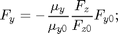
A equação característica é dada por:
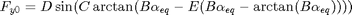
Onde 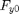 é a força lateral nominal e 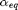 é o ângulo de deriva equivalente. 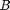, 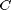, 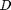 e 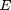 são coeficientes obtidos experimentalmente. As equações auxiliares são mostradas abaixo.
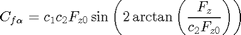
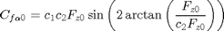
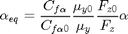
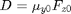
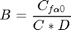
Hipóteses
- Relação não linear.
- Válido até 90 graus de ângulo de deriva.
Código
Código da função:
function Fy = pneuPacejkaFun(deriva,pneuDados) % Parâmetros nominais Fz0 = pneuDados(1); muy0 = pneuDados(2); % Parâmetros do pneu frente Cy = pneuDados(3); Ey = pneuDados(4); c1 = pneuDados(5); c2 = pneuDados(6); % Condições de operação Fz = pneuDados(7); muy = pneuDados(8); % Ângulo de deriva ALPHA = deriva; % [rad] % Modelo de pneu Cfa = c1*c2*Fz0*sin(2*atan(Fz/(c2*Fz0))); % Cfa em função de Fz Cfa0 = c1*c2*Fz0*sin(2*atan(Fz0/(c2*Fz0))); % Cfa para Fz0 alphaeq = Cfa/Cfa0*muy0/muy*Fz0/Fz*ALPHA; % alpha equivalente Dy0 = muy0*Fz0; By0 = Cfa0/(Cy*Dy0); % Stiffness factor Fy0 = Dy0*sin(Cy*atan(By0*alphaeq-Ey*(By0*alphaeq-atan(By0*alphaeq)))); Fy = -muy/muy0*Fz/Fz0*Fy0; end